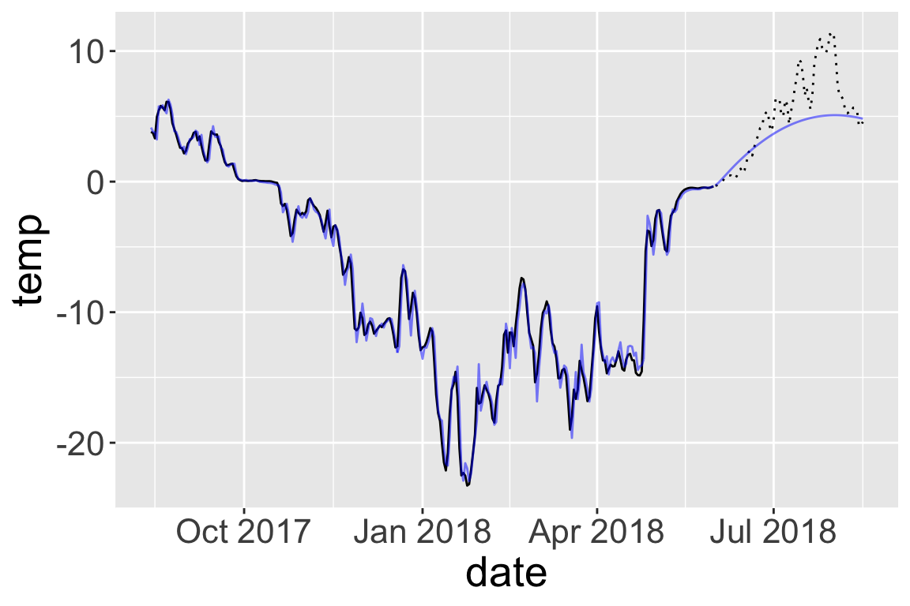
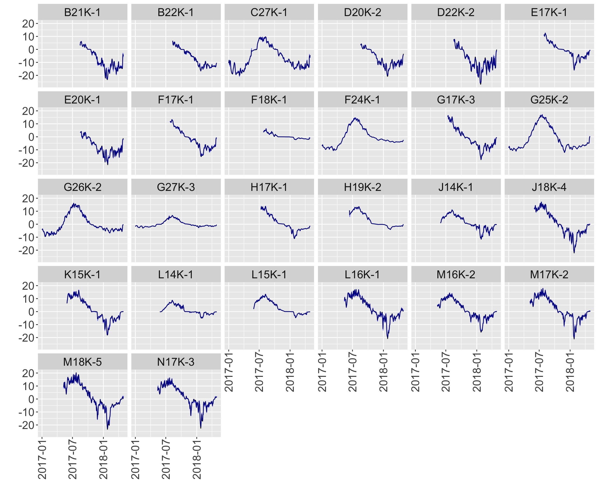
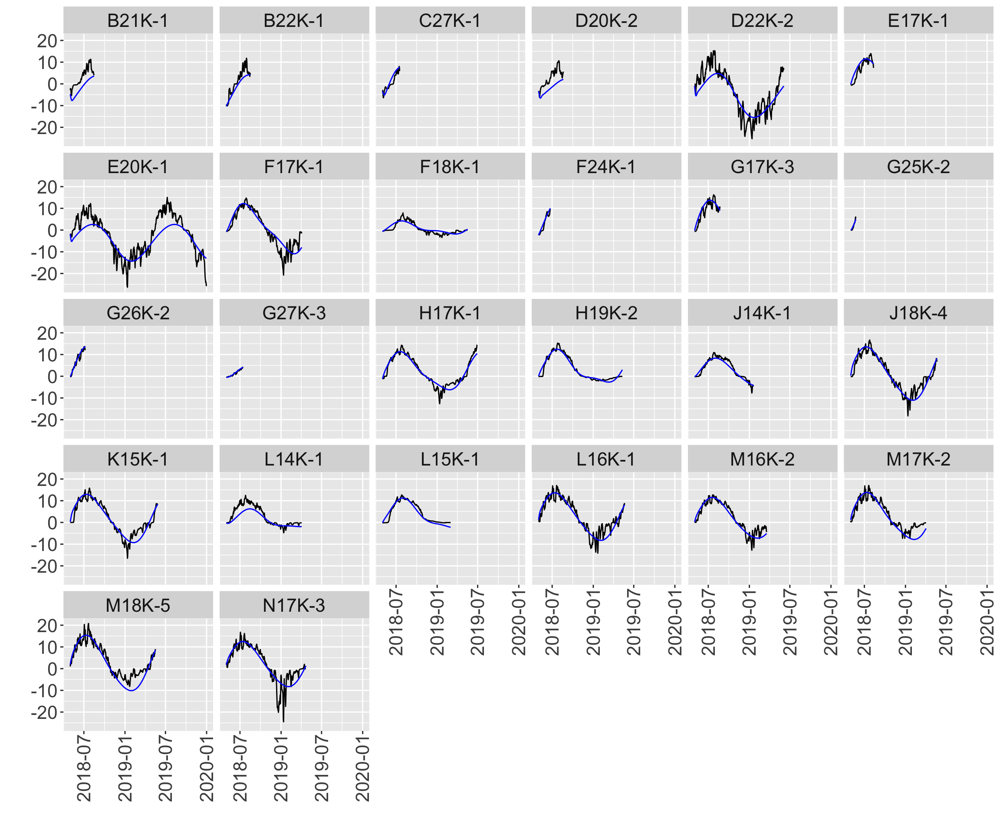
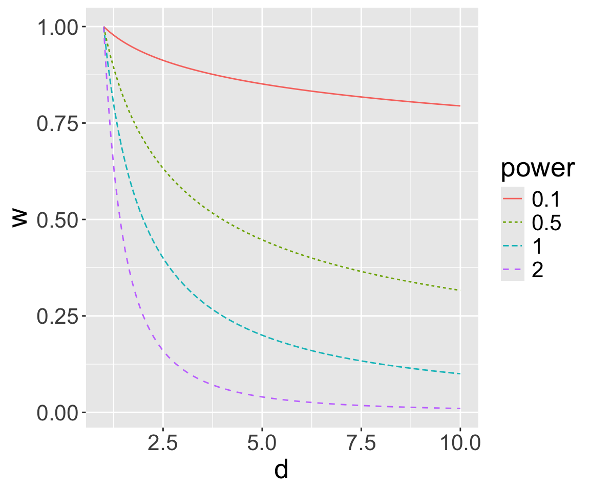
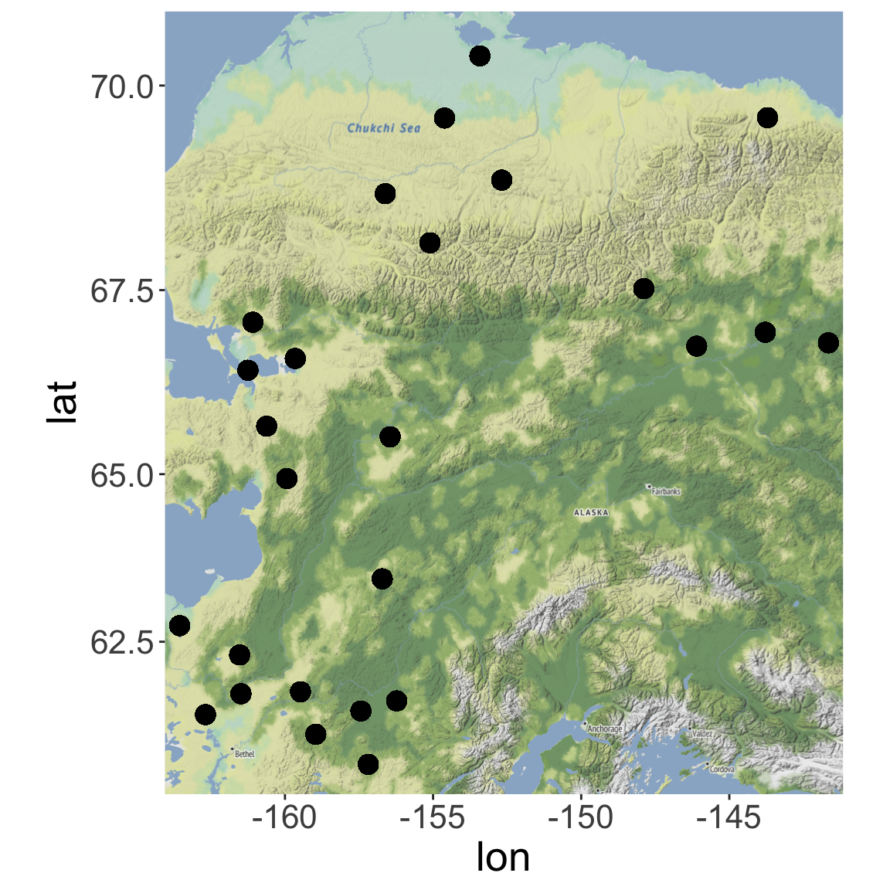
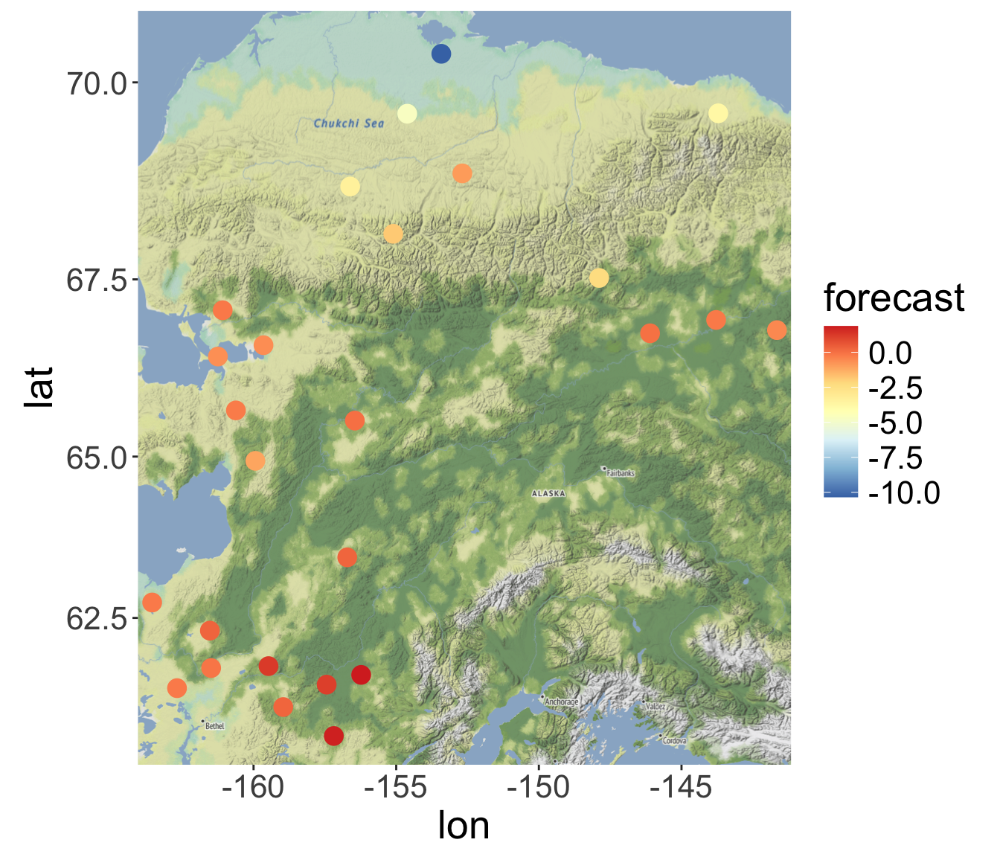
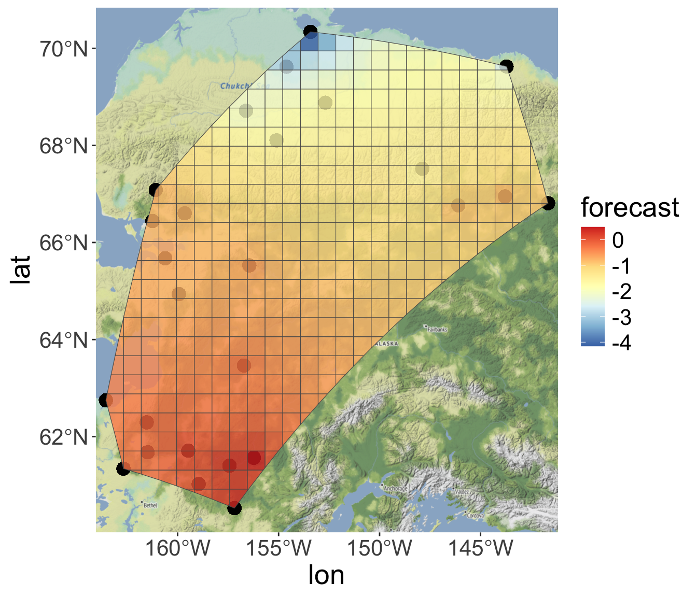
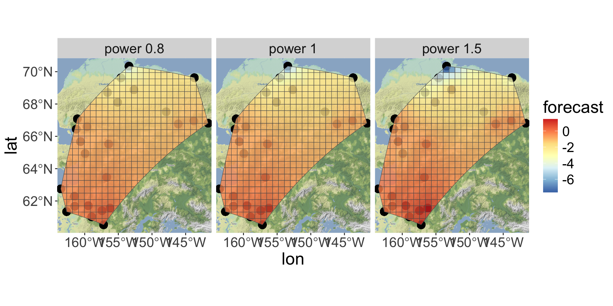

# A tibble: 6 × 7
site day date temp longitude latitude elevation
<chr> <dbl> <date> <dbl> <dbl> <dbl> <dbl>
1 B21K-1 226 2017-08-14 3.82 -155. 69.6 96
2 B21K-1 227 2017-08-15 3.72 -155. 69.6 96
3 B21K-1 228 2017-08-16 3.31 -155. 69.6 96
4 B21K-1 229 2017-08-17 4.95 -155. 69.6 96
5 B21K-1 230 2017-08-18 5.46 -155. 69.6 96
6 B21K-1 231 2017-08-19 5.80 -155. 69.6 96Spatial prediction
PSTAT197A/CMPSC190DD Fall 2025
Dr Coburn
UCSB
Announcements/reminders
Next week (Thanksgiving):
we are meeting Tuesday 11/25
but there are no Wednesday section meetings on 11/26
Final group assignment
groups posted [here]
task: create a method vignette on a data science topic or theme
goal: create a reference that you or someone else might use as a starting point next term
deliverable: public repository in the
pstat197workspace
Possible ideas for vignette topics
clustering methods
neural net architecture(s) for … [images, text, time series, spatial data]
configuring a database and writing queries in R
analysis of network data
numerical optimization
bootstrapping
geospatial data structures
anomaly detection
functional regression
anything you’d like
Outputs
Your repository should contain:
- A brief .README summarizing repo content and listing the best references on your topic for a user to consult after reviewing your vignette if they wish to learn more
- A primary vignette document that explains methods and walks through implementation line-by-line (similar to an in-class or lab activity)
- At least one example dataset
- A script containing commented codes appearing in the vignette
Timeline
let me know your topic by end of day Tuesday 11/25
present your draft in class Thursday 12/4
finalize repository by Thursday 12/11
Expectations
You’ll need to yourself learn about the topic and implementation by finding reference materials and code examples.
It is okay to borrow closely from other vignettes in creating your own, but you should:
cite them
use different data
do something new
It is not okay to make a collage of reference materials by copying verbatim, or simply rewrite an existing vignette.
the best safeguard against this is to find your own data so you’re forced to translate codes/steps to apply in your particular case
we’ll do a brief search and skim your references to ensure sufficient originality
Wrapping up soil temp forecasting
From last time
We had fit the site-specific model:
\[ \begin{aligned} Y_{i, t} &= f_i (t) + \epsilon_{i, t} \quad\text{(nonlinear regression)} \\ \epsilon_{i, t} &= \sum_{d = 1}^D \alpha_{i,d}\epsilon_{i, t - d} + \xi_{i, t} \quad\text{(AR(D) errors)} \end{aligned} \]
And computed forecasts \(\hat{Y}_{i, t+ 1} = \mathbb{E}(Y_{i, t + 1}|Y_{i, t})\)
Fitting and forecasts for one site
Series: y_train
Regression with ARIMA(2,0,0) errors
Coefficients:
ar1 ar2 const sin1 cos1 sin2 cos2
1.4200 -0.5192 -97.0613 -88.1952 -113.2035 -8.7344 5.5794
s.e. 0.0497 0.0497 11.5069 9.0469 13.2328 9.5148 12.0896
sigma^2 = 0.7837: log likelihood = -375.26
AIC=766.52 AICc=767.03 BIC=795.9
Now for many sites
Remember the functional programming iteration strategy?
# A tibble: 26 × 5
site train test fit pred
<chr> <list> <list> <list> <list>
1 C27K-1 <tibble [485 × 3]> <tibble [78 × 3]> <fr_ARIMA> <forecast>
2 F24K-1 <tibble [485 × 3]> <tibble [54 × 3]> <fr_ARIMA> <forecast>
3 G25K-2 <tibble [485 × 3]> <tibble [24 × 3]> <fr_ARIMA> <forecast>
4 G26K-2 <tibble [485 × 3]> <tibble [69 × 3]> <fr_ARIMA> <forecast>
5 G27K-3 <tibble [485 × 3]> <tibble [76 × 3]> <fr_ARIMA> <forecast>
6 M17K-2 <tibble [358 × 3]> <tibble [338 × 3]> <fr_ARIMA> <forecast>
7 M18K-5 <tibble [357 × 3]> <tibble [382 × 3]> <fr_ARIMA> <forecast>
8 M16K-2 <tibble [354 × 3]> <tibble [323 × 3]> <fr_ARIMA> <forecast>
9 N17K-3 <tibble [353 × 3]> <tibble [357 × 3]> <fr_ARIMA> <forecast>
10 L16K-1 <tibble [352 × 3]> <tibble [386 × 3]> <fr_ARIMA> <forecast>
# ℹ 16 more rows

Spatial prediction
We could consider our data to be more explicitly spatial:
\[ Y_{i, t} = Y_t(s_i) \qquad\text{where}\qquad s_i = \text{location of site }i \]
In other words, our data at a given time are a realization of a spatial process \(Y(s)\) observed at locations \(s_1, \dots, s_n\).
Can we predict \(Y(s_{n + 1})\) based on \(Y(s_1), \dots, Y(s_n)\)?
Intuition
Tobler’s first law of geography:
“everything is related to everything else, but near things are more related than distant things”
So a weighted average of some kind makes sense for spatial prediction
\[ \hat{Y}(s) = \sum_i w_i Y(s_i) \]
where the weights \(w_i\) are larger for \(s_i\) closer to \(s\).
Inverse distance weighting
A simple and fully nonparametric method of spatial prediction is to set \(w_i \propto 1/d(s, s_i)\) where \(d\) is a distance measure.
Inverse distance weighting does just that, for powers of distance:
\[ \hat{Y}(s) = \sum_i c \times d(s, s_i)^{-p} \times Y(s_i) \]
Where \(c\) is the normalizing constant \(1/\sum_i d(s, s_i)^{-p}\).
Power parameter
The power parameter \(p\) controls the rate of weight decay with distance:
\[ w_i \propto \frac{1}{d(s, s_i)^p} \]

Interpolation
Spatial interpolation refers to ‘filling in’ values between observed locations.
- Generate a spatial mesh of with centers \(g_1, g_2, \dots, g_m\)
- Predict \(\hat{Y}(g_j)\) for every center \(g_j\)
- Make a raster plot
Mesh
For spatial problems, a mesh is a mutually exclusive partitioning of an area into subregions. Subregions could be regular (e.g., squares, polygons) or irregular (try googling ‘Voronoi tesselation’).
Map of locations
Earlier, I fit models and generated forecasts for 26 sites chosen largely based on having overlapping observation windows.

Forecasts
I also truncated the training data to stop on the same date (April 30, 2018). So we can plot point forecasts for May 1.

Interpolations using IDW
So interpolating between forecasts yields spatial forecasts.

Effect of IDW parameter \(p\)
The power parameter \(p\) controls the rate of decay of interpolation weight \(w_i\) with distance.

Considerations
Choosing \(p\) can be done based on optimizing predictions or by hand.
Uncertainty quantification?
usually, could use variance of weighted average
but also tricky in this case because we are interpolating forecasts, which themselves have some associated uncertainty

PSTAT197A/CMPSC190DD Fall 2025